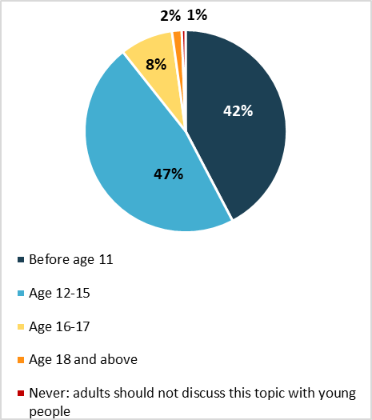

Sex Education:Tabooed Knowledge
Have you heard about sex in the education’s skin? Surprisingly still quite a controversial topic in the eyes of many individuals; sex education should be one of the building blocks of one’s character and not something that is sprinkled upon one’s education.
Sex education can be possibly defined as the instruction of issues relating to human sexuality, including emotional relations and responsibilities, human sexual anatomy, sexual activity, sexual reproduction, age of consent, reproductive health, reproductive rights, safe sex and birth control. The above chart shows the expertise in sex education through the generations. This paints a very sad picture of our current society. In most families, we are not even allowed to utter words like 'sex', 'intimacy' or even 'periods', to name a few. Our generation gap is visible in the mindsets. We are not even told the basic facts and so, we absorb nearly whatever information they get by watching adult movies. The young generation is not educated about positive self-acceptance, the importance of consent or even basic menstrual hygiene. Also, out of the few schools which provide information, they purposely keep the male students away from the sessions on menstrual hygiene, thereby adding to the stigma surrounding it. Thus, leading to crimes like molestation and rape. The absence of this vital piece of information causes great havoc among society which society blames on the female Populus completely disregarding the actual culprit at hand, the lack of sex education among the Populus. This gives a man the strength, courage and audacity to touch a girl inappropriately and gives a girl just the reason to bear the pain quietly through her life. To end this cycle of tyranny the only way forward is sex education. Not only to women but to the entire population irrespective of age. This will not only sway men away from such heinous activities but will also return women their voices, courage and perseverance to speak against such crimes.